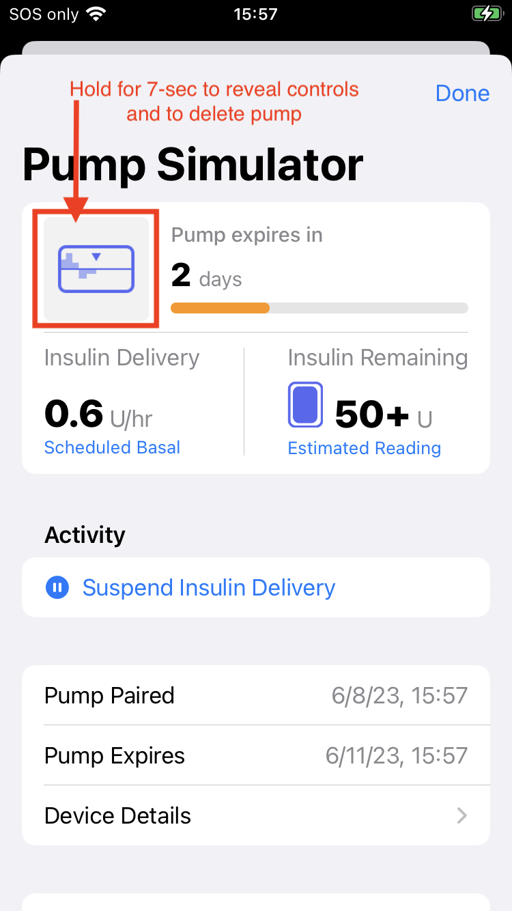
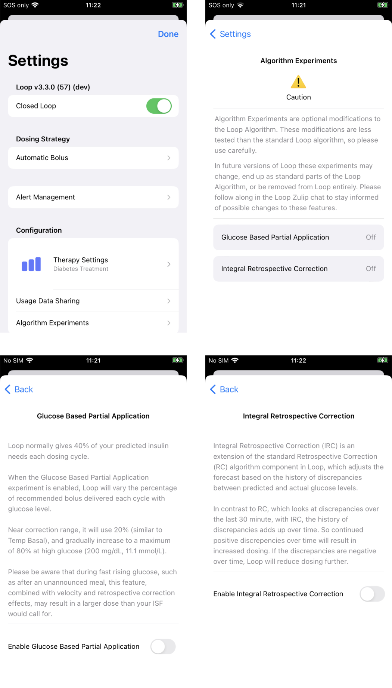
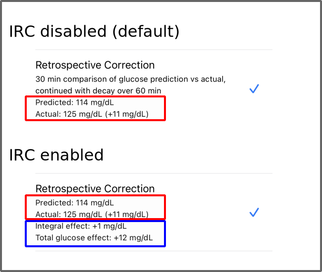
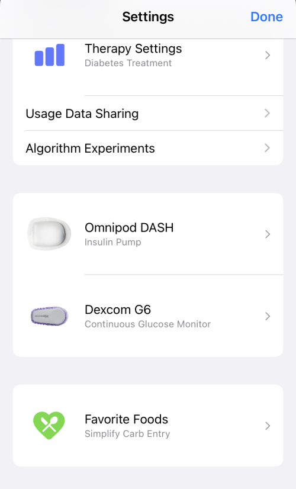
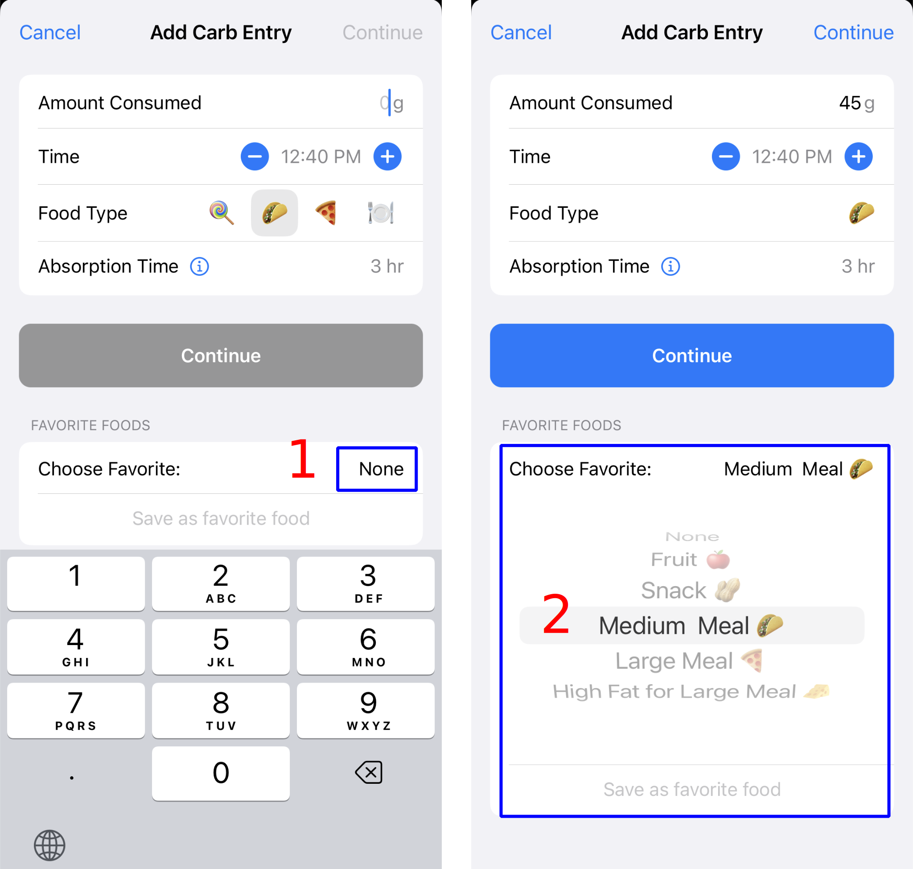
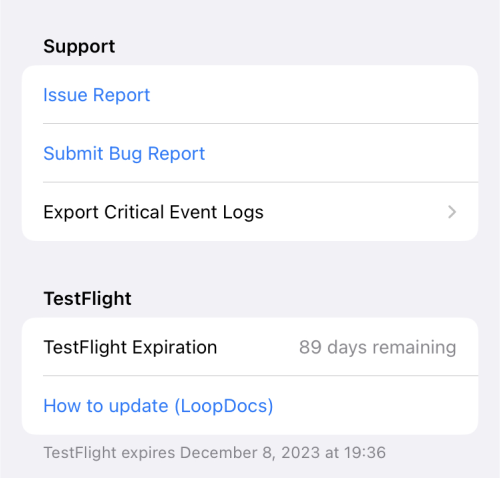

Loop Development
Loop Development¶
The early history of the Loop app was touched on in the introductory LoopDocs Overview: Development History section.
The Loop Releases page lists releases since version 2.0 in reverse chronological order.
The next version of the Loop app is developed using branch(es), independent of the released Loop version, which is found in the main branch. The dev branch is used by the developers to push out changes for users to test. You should only test a development branch if you are willing to be both an active participant with the developers to monitor announcements and provide feedback and to build frequently to obtain the latest feature or bug-fix that is being tested. If you are willing to help out - this is the way the next release of Loop is improved.
If you choose to use dev, you accept that this code is not released.
Please read this entire page before using any version of Loop other than the released code.
Updates in dev¶
This section is an early look at what has been added to dev since Loop 3.2.x and will probably be in the next release. After the release, some of the content and graphics in this section will move to the Releases page or the appropriate documentation section.
- Support for Libre Sensors
- Modified Simulator Interface
- Algorithm Experiments
- Favorite Foods
- TestFlight Expiration Warning
- GitHub Browser Build Updates
- Miscellaneous Code Fixes
Support for Libre Sensors¶
LibreTransmitter support was merged into the dev branch in July 2023.
If you are using the GitHub / Browser Build method, please review:
- Browser Build: One-Time Changes: New steps and dates at which the new steps were added
Modified Simulator Interface¶
The simulators for the Pump and CGM, for the dev branch show a new format when first selected. The initial view is a demonstration screen showing a typical CGM or Pump display. In order to view behind the scenes, modify settings, and delete the simulator, you must press and hold (long-press) on the top of the display. Anywhere in the top third works for the long-press, but I like to touch the card as shown in the pump example below. If you've counted to 10 and the display has not updated yet, then return to the main screen, go back to the simulator screen, and try again.

Algorithm Experiments¶
Two algorithm experiments have been added to `dev``. These are Glucose Based Partial Application and Integral Retrospective Correction. They can be viewed on the Loop Settings screen just below Therapy Settings and Usage Data Sharing as shown in the graphic below:

Glucose Based Partial Application (GBPA):¶
- Originally proposed in Pull-Request 1988 for Loop.
- It is only used when
Automatic Bolus(AB) is selected forDosing Strategy - This modification does not affect the recommended dose, only how quickly the recommended dose is automatically delivered
When AB is selected and GBPA is enabled, the percentage of the recommended dose delivered per cycle of Loop ranges from 20% to 80% based on glucose level and user-selected correction range. (Without GBPA enabled, AB uses a fixed 40% percentage regardless of glucose level.)
Partial Application= 20% when glucose is at or below the users correction range lower value (including overrides) plus 10 mg/dL (0.6 mmol/L)Partial Applicationincreases linearly from 20% to 80% up to a glucose level of 200 mg/dL (11.1 mmol/L)Partial Applicationis 80% when the glucose level is above 200 mg/dL (11.1 mmol/L)
Insulin Delivery Using GBPA¶
Loop makes a prediction and recommends an insulin dose based on your settings and your glucose, insulin and carb history. The selected Dosing Strategy (Automatic Bolus with or without GBPA or Temp Basal Only) only changes how quickly that recommended dose is delivered.
This example assumes Loop recommends 1 U (at time 0) and future glucose values match Loop's prediction for each successive 5-minute update. In other words, over half an hour, Loop provides about 1 U of insulin above that delivered by the scheduled basal rate.
The tables below show Automatic Bolus patterns, using a pump minimum bolus increment of 0.05 U, for several application factors. When using GBPA, the application factor can vary with glucose, but that is ignored for this simplified example.
The first table shows the bolus delivered each Loop cycle for several application factors. Higher application factors start with higher boluses, but go to zero (indicated by a dash) more quickly.
Incremental Dose for several application factors when initial recommendation is 1 U
| Minutes | 20% | 40% | 60% | 80% |
|---|---|---|---|---|
| 0 | 0.20 | 0.40 | 0.60 | 0.80 |
| 5 | 0.15 | 0.25 | 0.25 | 0.15 |
| 10 | 0.15 | 0.15 | 0.10 | 0.05 |
| 15 | 0.10 | 0.10 | 0.05 | - |
| 20 | 0.10 | 0.05 | - | - |
| 25 | 0.05 | - | - | - |
| 30 | 0.05 | - | - | - |
The second table shows the cumulative delivery. A dash shows recommended dose was delivered. Remember, this is a simplified example.
Cumulative Dose for several application factors when initial recommendation is 1 U
| Minutes | 20% | 40% | 60% | 80% |
|---|---|---|---|---|
| 0 | 0.20 | 0.40 | 0.60 | 0.80 |
| 5 | 0.35 | 0.65 | 0.85 | 0.95 |
| 10 | 0.50 | 0.80 | 0.95 | 1.00 |
| 15 | 0.60 | 0.90 | 1.00 | - |
| 20 | 0.70 | 0.95 | - | - |
| 25 | 0.75 | 0.95 | - | - |
| 30 | 0.80 | 0.95 | - | - |
The 20% and 40% application factor columns did not reach 1 U in 30 minutes because the requested dose is smaller than this pump will deliver. The 60% application factor only reached 1 U because tiny doses down to 0.03 U were rounded up to 0.05 U.
The Temp Basal Only Dosing Strategy provides about 17% of the recommended bolus each 5-minute interval. The minimum GBPA application factor of 20% was selected to be similar to that rate for lower glucose values. Initially, an application factor of 20% delivers insulin more quickly than Temp Basal Only, but by the end of 30 minutes, the basal program inside the pump keeps track of how much is delivered to reach the rate requested, achieving the full 1 U (for this example).
Integral Retrospective Correction (IRC):¶
- Originally proposed in Loop Issue 695
- This was tested in a few
forksbut not included intodevuntil recently - Initial merge into dev: Loop PR 2008
- This was tested in a few
- Updated with a modification to limit stacking of
IRCwith GlucoseMomentum: Loop PR 2028 - Integral Retrospective Correction, when enabled:
- changes the Loop app prediction model and thus can affect the recommended dose
- applies to both
Dosing Strategies:Temp BasalorAutomatic Bolus
Referring to the Algorithm: Prediction page:
- When
IRCis disabled (default), the equation used to predict glucose continues to be:
- When
IRCis enabled that equation changes to:
Note that the Momentum term does not just add to the other effects; it is actually more complicated (and also more challenging to describe in simple math terms).
The Retrospective Correction section of the Predicted Glucose Chart is updated when IRC is enabled, as shown in the graphic below. The Integral effect, inside the lower blue rectangle, is the difference between the IRC and RC calculations.

The IRC term is described in this (updated) comment including plots and equations. Some of the information in that comment is repeated below: Important points about IRC.
If you want to look at the code, the version (as of 14-Aug-2023) is found in LoopKit/LoopKit:
RetrospectiveCorrectioncode:StandardRetrospectiveCorrection.swiftIntegralRetrospectiveCorrectioncode:IntegralRetrospectiveCorrection.swift
Important points about IRC¶
-
Known risk factors compared to standard Loop:
- With
IRCturned on, Loop will likely increase insulin corrections in response to persistent discrepancies between observed and predicted glucose motion, which may increase the risks of hypoglycemia IRCmay also lead to increased oscillations ("roller-coaster") in glucose responses- Both of these risk factors are higher if the user's setting value for Insulin Sensitivity (ISF) is too low
- Increasing
ISFsetting value tends to mitigate these risks but it is impossible to offer any guarantees for anything around T1D
- With
-
Compared to standard
RC,IRCis more likely to improve glucose control in the following scenarios:- Glucose remaining high or decreasing slower than expected due to temporarily reduced insulin sensitivity or poor site absorption
- Glucose trending low faster than expected due to temporarily higher insulin sensitivity
- Glucose spikes due to unannounced meals
- Glucose remaining high (or trending low) on tail ends of meals where carbs entered were underestimated (or overestimated)
- Glucose remaining elevated due to unannounced protein+fat effects
- Glucose staying above (or below) the correction range due to too low (or too high) basal rate settings
-
In some scenarios
IRCdoes not differ from standard LoopRC- Regardless of the current glucose level, neither RC nor IRC is adding to the glucose forecast during the times when the absorption rate of announced carbs is greater than the minimum absorption rate.
- Neither RC nor IRC effects depend on glucose level; both depend on discrepancies between predicted and actual glucose responses.
-
Please do not expect immediate or very substantial improvements in blood glucose control. A one-time success after turning
IRCon does not really mean thatIRC"works" - this could just as well be a temporal coincidence. Some ways to decide ifIRCcould be safe and effective for you include:- Responses to unannounced meals - spikes should in general be somewhat lower than those with standard Loop, but there should also be no follow-up lows
- Nighttime responses over a few weeks - highs or lows should be less frequent compared to the standard
Loop; at the wake-up time blood glucose should, in general, be closer to the correction range.
Favorite Foods¶
This feature allows you to save Favorite Foods.
A new row on the Loop app Settings screen, see graphic below, provides access to create and edit your Favorite Foods.

In the example meal entry shown below:
- The Favorite Food row (at the bottom) is tapped
- The desired Favorite Food is selected
At this point the meal can be saved by tapping the Continue button, or the user can modify the time (typical) or any other of the carb entry rows before tapping Continue.

TestFlight Expiration Warning¶
The Loop app has been updated to detect whether the build was uploaded through TestFlight, which implies a 90-day limit until the app expires.
The usual Loop expiration notification system alerts the user when within 20 days of expiration. In addition to that modal alert, the user can examine the bottom of the Settings screen at any time to see the expected expiration date and time.

GitHub Browser Build Updates¶
The dev branch has several updates merged that make it easier to find errors in configuration and that make the GitHub Browser Build automatic.
Note that the automatic build feature is opt-out. In other words, unless you take specific steps, the GitHub Browser Build for Loop will:
- Automatically build a new version once a month, with automatic update included
- Automatically update your fork of LoopWorkspace once a week if updates are available
It is strongly recommended that all users of the released code (main branch), maintain this automatic schedule so they are never without a valid and up-to-date Loop in their TestFlight app.
For users of the dev branch, it is not uncommon to disable the automatic update portion so they can choose when to update their development version, but should probably keep the monthly build portion of the process.
In addition to the easier to read error messages found with these updates, these additional simplification include:
- Actions are broken into logical components, each of which provides an easy to understand error message if it fails which includes a suggested fix
- A new builder no longer needs to create the Match-Secrets repository
- If it does not exist, one is created for you
- Only the App Group ID must be added to the Identifiers; all other App services are automatically added
- For new builders and current 3.2.2 users updating to the next release
- The alive branch needed to enable automatic building is created automatically
- If their GH_PAT does not have
repo, workflowpermission, a prominent message is displayed with each Action completed
These sections are still useful for version 3.3.0 dev users:
- Browser Build for dev: How to use GitHub Browser Build for
devbranch - Browser Build: One-Time Changes: New steps and dates at which the new steps were added
Miscellaneous Code Fixes¶
G7 Sensors: Duplicate CGM Values¶
Fixed with PR 16: Fix parsing of age field of message
- Most sensors report the time with very little offset between time of arrival and time of sensing
- If the time discrepancy is large, the error (using one byte instead of two for age of the reading) could cause CGM values to appear as duplicate readings in Loop
Remote Services Update¶
The code that feeds Loop data to remote services like Tidepool and Nightscout have been improved to be more robust.
What are Git Branches?¶
There is a lot of discussion about branches with Loop but the concept is simple. Basically, they are all slightly different versions of Loop...kind of like different edits of the same book.
To really understand what branches are, we should probably explain a little more about the software and how development works. You can watch a 30-minute long, classic Katie DiSimone video explanation about branches created when Loop Version 2.0 was newly released. Keep in mind while watching the video that master was the old name for the main branch. The information in this video is still generally useful with the last half focused on automatic-bolus - the automatic-bolus dosing strategy has now been incorporated into Loop main branch. Loop has moved on to using only one stable branch (main), with dev recommended for developers/testers.
Loop GitHub Information¶
Loop developers own an account in GitHub called LoopKit. Within that account, the developers have several repositories that support Loop in particular. A repository is like a book...let's think of it like a cookbook for now. Within the LoopKit account, there are repositories for Loop itself, LoopDocs, and various other supporting "frameworks" that are helper repositories for Loop to build correctly. For example, Loop's repository has a lot of info about the app itself; the outward-facing things that you interact with. How information is put to you and taken in from you...that's in Loop repository code. But, there's more than just a user interface for Loop. Loop has to do a lot of complex work like Bluetooth communications, algorithm math, pump communications, etc. The Loop app has help from frameworks to do those other parts. CGMBLEkit for some of the transmitter parts of Loop, RileyLink_ios for the pump managers (talking to the pumps and decoding their information), LoopKit for the algorithm about carbs and insulin curves, etc.
When you build Loop, in the background, Loop pulls those other frameworks (7 in total) into the build process using Carthage. Carthage is like a personal shopper. You give it a shopping list (the cart file in Loop code is that shopping list) and it goes and fetches that for you during the build process. Sometimes your computer has an old shopping list...and that can cause build errors. Hence the carthage update fix in the Build Errors page...that command updates the shopping list to get the right versions of those frameworks.

Anyways...so now you know about the general structure of Loop and LoopKit in GitHub. Now we can discuss Loop itself a little deeper.
So let's imagine Loop as a cookbook. The developers are the authors/chefs of the recipes (code) in the cookbook. The authors spend countless hours testing new recipes, taste testing, and documenting improvements. They send the drafts to the editor, who makes suggestions and eventually, the cookbook is finalized. There are no grammar issues, and no typos, the photos are beautiful and the recipes are yummy. They publish the book and you see a gorgeous final product on the shelves. That is called a release, and it is the main branch. This book has been well-tested and is super stable. Every time you cook with those recipes, you know exactly what you're getting and lots of people have had a chance before you to make sure that it all tastes good. The main branch is stable and tested.
But then...the chefs/developers go on a trip. They are inspired by new cuisine and want to add new recipes to the old cookbook. (Things like Omnipod support and the overrides are new "recipes" that were developed since the last main release, for example.) But, the process of developing a recipe is arduous. There was a lot of trial and error involved. Lots of tweaking ingredients (code). The editors try out the new recipes and offer feedback (similar to the Issues List on GitHub). While the recipes are being developed, they have a version of the old cookbook that gets marked up...edited in pencil a lot. Scribbles and notes in the side. Revisions happen frequently because that's what testing new recipes is all about. These marked-up versions of the cookbook are called the dev branch. Short for "development" branch. Like the name sounds...this is where new developments are happening, new recipes, and tweaks.
After much testing and tweaking, eventually, the recipes get the flavors right (bugs in code are squashed) and enough people have provided feedback and careful observations of results...that the book goes to the publishing house for the next printing. The cookbook is republished with an updated edition number and new recipes are highlighted. When this happens in Loop, Loop's main branch is updated with the new features coming from dev (aka, the dev branch is merged into the main branch). When that happens, the main branch gets another release version. At this point, dev and main are identical. They remain so until the development team for Loop starts working on the next batch of improvements, which could be in the next hour or even days later, but then the cycle starts again. The developers will start editing the code again and dropping those edits in the dev branch for further development.
What's going on in the dev branch?¶
The dev branch, currently v3.3.0, is where the next version of Loop is being developed and tested.
If you choose to build Loop using a dev branch, you need to be aware that the dev branch may update code frequently and unannounced in the traditional sense that most users in the Looped group or Instagram would see. Developers are not helped by people being in a dev branch if those users mistakenly think of it as a stable main branch with lots of detailed docs to go with it. People should only use a dev branch build if they EDUCATE themselves on the expectations and how to properly manage dev information and updates. People using the dev branch should also have regular access to a computer to be able to rebuild quickly if a new bug/fix is identified.
If you choose to use a dev build, you can stay abreast of developments in a number of ways...but they will all require you to do some legwork and keep yourself informed. This is not a situation where you should expect a fancy Loopdocs page updated regularly with current "dev updates"...that's just not the way the dev branch works (at least normally).
Subscribe to the Zulipchat channels¶
Use Zulipchat forums for Loop.
This forum has several streams of conversations (streams) depending on interest. I highly recommend following all the streams so you do not miss conversations. You can select by stream and by topic within a stream to focus on a given conversation.
Zulip Chat Streams
- If you are using the dev branch, you must be in the #development stream.
- If you want to know when LoopDocs gets updated, follow the #documentation stream.
- Code changes are called commits in GitHub.
The #github stream will have an automated post whenever a new commit is made and it will give a brief line description of the commit.

You can also go directly to the git commit history for each of the branches if you'd like.
If you click on the commit, you can see exactly what changes to the code were made. It's an interesting learning experience. In red is the code that is old, and in green is the updated code. The line numbers and file names of the edited code are also there to help.

I don't expect many of you would understand exactly what the edits mean, or how the new code might function. However, I bring up the topic of git commit history so that you can use that to realize just how often the dev branch is updated. Go ahead and look at the number and frequency of commits in that branch. That's why no one would want to maintain a documentation list of the changes in the dev branch. It's just too much of a moving target.
Watch the Loop Repository and Issues List¶
Open the Loop repository and subscribe to the Issues.
You can choose to watch the repository so that you get emails when new Issues are reported. This is a good way to find out if there are other people reporting odd behavior that you are wondering about. If you use dev and wonder about something you are seeing in Loop, you can check Issues list to see if others are noticing the same. If so, you can help by capturing information and reporting it. Not super helpful to just say "Yeah, me too..." but better if you can attach screenshots, Issue Reports from Loop settings, and a thorough description of the problem you are seeing. Be a part of the solution by thoughtfully providing information to help debug.

Keep checking Looped group¶
Keep watching The Looped Group on Facebook. Major concerns/issues are brought up there...so it doesn't hurt to scroll through and see what's going on there.
Become familiar with your data sources¶
Another useful thing if you'll be on dev branches undergoing a lot of active change...know how Loop works and where to look for additional information about what you are seeing. For example, if you see an IOB value that looks odd, you should know to look at the insulin deliveries stored in the Health app.
Generate an Issue Report¶
Know how to generate an Issue Report when you see a problem so you can provide that if asked. An Issue Report is a log file generated by the Loop app that has a lot of information the developers can parse to figure out what Loop was doing when you were having a problem.
- Loop v2.2.9 and earlier:
Loop Settings -> Issue Report - Loop 3 and later:
Loop Settings -> Support -> Issue Report
Do not confuse this with reporting an issue with Loop. That is done by logging into GitHub and going to the Issue page to report a new issue. You can read about existing issues without logging in, but to report a new one, you must log in to GitHub.
Create a Debug Report¶
This 6-minute long, classic Katie DiSimone video shows how to capture debugging logs. If you are testing a new branch, this is a valuable skill to assist developers in identifying problems. In addition to showing you how to generate and save the debug text information, the video explains how to create a gist with the debug information using your GitHub account and file an official Issue on the Loop GitHub repository. This may be required in some cases. But start by chatting directly on Zulipchat with the developer. What you are experiencing may already be known. If the developers need you to open a new Issue, they will say so on Zulipchat.
Repositories and Code¶
If you're a developer looking for direct links to the code and documentation in GitHub:
For more information on how to contribute code to the Loop project, please review:
If you want to contribute code improvements, please join Loop Zulipchat and be sure to subscribe to all the channels. Meet the developers and testers who make this app, and learn about what is coming next.